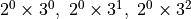
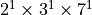

Prime Factorization and Divisors of numbers¶
Prime Factorization¶
Prime factorization of any number is unique and can be obtained using either the tabular method or the tree method. It is a good idea to write the primes in increasing order.
GCD and LCM¶
Get the prime factorization of the numbers whose GCD or LCM is desired. Pick the smallest powers for each prime present in any of the prime factorizations for the GCD. Pick the largest powers for the LCM.
Including all the primes that show up:
When only two numbers are involved, the product of the GCD and LCM is the product of the two numbers. The reason for this is that in this case the product of the smallest power and the largest power for each prime in the factorization will be the product of the powers of that prime in the two numbers.
Divisors¶
Consider the number 8. Its divisors are 1, 2, 4, and 8. Why are these the only divisors?
The prime factorization of is . Thus, the divisors are powers of  such that the power is less than or equal to the power of in . In other words, the divisors are .
such that the power is less than or equal to the power of in . In other words, the divisors are .
Number of divisors¶
By extending this logic, the divisors of will be all combinations of and :

Thus, the total number of divisors is . This is denoted by the Greek letter “tau”: .
Sum of divisors¶
The sum of the divisors is denoted by the Greek letter “sigma”.
The summation in the last step can be done manually for small sums. When the numbers are large, one can note that each paranthesis in the penultimate step is the summation of a geometric series.
Thus,
Another example:
Product of divisors¶
The product of the divisors can be obtained easily by noting that for every divisor, the number can be written as a product of the divisor and another complementary divisor. Thus, listing out the equations for all the divisors we can get the product of the divsors. See an example for the number 8 below.
Taking the product of all the equations
Highest power of a number that divides a factorial¶
What is the highest power of 2 that divides 12!?
Let us denote this by the Greek-letter “nu”: 
Observe that 2, 6, and 10 contribute one power of 2 each; 4 and 12 contribute two powers of 2 each; and 8 contributes three powers of 2.
A different way of counting this is as follows: 2, 4, 6, 8, 10, and 12 contribute the first power of 2 each; 4, 8, and 12 contribute a second power of 2 each; and finally 8 contributes a third power of 2. Thus, we are counting the number of multiples of 2^1, 2^2, and 2^3 in 12!.
. Thus, we throw away the fractional part and get as the higher power of 2 that divides 12!.
The “throw away the fractional part” is handled by the greatest integer function - the largest integer that is smaller than a number is the greatest integer function. We will call it the floor function and will write it as follows:
We won’t have to deal with negative numbers here. Nonetheless, as an example for negative numbers, .
Thus,
In the above example, we were looking for the highest power of a prime number. What if one wants the highest power of a number that is the product of prime numbers?
What is ?
The prime factorization of 42 is . Note that we are restricting ourselves to the case where the highest power of any prime in the prime factorization is 1. Each power of 42 in 100! will come from one 2, one 3, and one 7. Moreover, powers of 2 will be more frequent than powers of 3 which, in turn, will be more frequent than powers of 7. Thus, we only need to find the highest power of 7 that divides 100!.
Powers of 7 greater than 2 are larger than 100. Thus, the floor functions for those powers are 0.